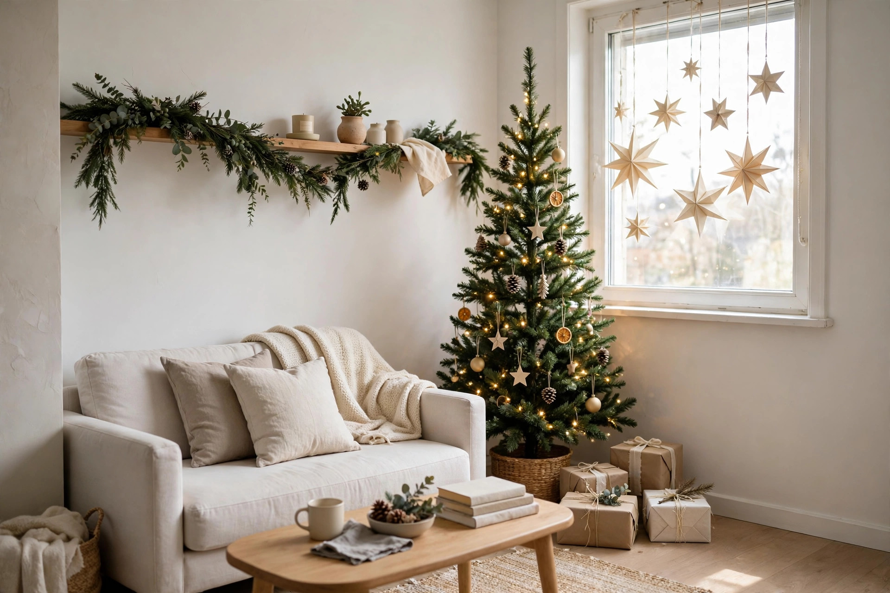

Christmas Decor
Christmas Decorations 2026 — 12 Ideas for Small Apartments
Intro
Christmas decorations in 2026 are calmer, more natural and more personal than they were a few years ago. The big trends are jewel tones instead of bright red, paper and dried decorations instead of plastic, and fewer decorations chosen well instead of a flat full of everything. For a small apartment, that is good news — 2026 style suits a small space better than the old maximalist look ever did.
This guide has 12 Christmas decoration ideas for 2026, all sized for a small flat and a small budget. Each idea lists what it costs. Most of these use natural materials or things you already own. Start with the tree, then the table, then one window — and stop there.

1. A slim pencil tree that fits the corner — $25–$45
The 2026 tree for a small flat is a slim pencil tree, about 150 cm tall and 60 cm wide, that tucks into a corner and leaves the floor clear. It holds fewer ornaments than a wide tree, but that is the point — twelve good ornaments look better than forty crowded ones. A slim artificial tree costs about $35. Put it in the corner by the window, not in the middle of the room, and the flat keeps its walkway. A pencil tree also stores in a narrow box under the bed.
2. Jewel tones: emerald, burgundy and navy — $10–$20
The colour story of 2026 is jewel tones — deep emerald green, burgundy and navy — instead of bright red and gold. On a small tree, jewel tones look rich without shouting. Buy one pack of baubles in a single jewel colour, about $10 for twelve, and mix them with cream or white ones you already own. The deep colours make the tree look expensive in photos and suit a flat that already has dark furniture. Keep the ribbon and the lights warm, not white, so the colours stay soft.
3. Paper ornaments you fold yourself — $3–$8
Paper ornaments are the sustainable decoration of 2026. Folded stars, paper snowflakes and honeycomb balls made from craft paper cost almost nothing, weigh nothing and look far better than cheap plastic baubles. A pack of craft paper costs about $4 and makes twenty ornaments. Hang them on the tree, in the window and from the ceiling on thread. They are light enough for a small tree, and they fold flat for storage in January.
4. A dried orange and cinnamon garland on the tree — $3–$6
Dried orange slices threaded with cinnamon sticks are the natural garland of 2026. They cost about $4 to make, smell faintly of Christmas, and add a warm amber colour that plastic garlands cannot match. Slice two oranges, dry them in a low oven, and thread them onto string with a needle. Drape the string around the tree in two loose loops, not tight spirals. It is the cheapest decoration on the tree and the one guests always notice first.
5. One statement wreath on the front door — $12–$20
In 2026 the wreath is the one decoration that gets the full budget. A good wreath — real or faux pine, with pinecones and a simple bow — on the front door says Christmas before anyone steps inside. A ready-made wreath costs about $15, or make one from a wire ring and a pine garland for about $10. Hang it with a ribbon over the top of the door, not a nail, so the door stays undamaged. One wreath is enough; the door does not need anything else.
6. Warm white lights, not coloured ones — $8–$15
Coloured lights are out in 2026; warm white is in. Warm white fairy lights — about 100 lights on one string — make a small room glow without turning it into a disco. One string costs about $8. Use it on the tree, one on the window and one along the mantel, all the same colour temperature, so the whole flat glows evenly. Battery lights with a timer are worth the extra $3, because they switch themselves off at midnight.
7. A table centrepiece from one tray — $8–$15
A Christmas table in a small flat needs one centrepiece, not five. Put a wooden tray in the middle of the table, add three battery candles in different heights, a few pinecones and a sprig of eucalyptus. The tray keeps everything together and lifts off the table in seconds when you need the space for dinner. A tray costs about $8 and the candles about $6. The centrepiece stays up all December and comes off the table in one move.
8. Velvet ribbon on the tree instead of tinsel — $5–$8
Tinsel is out in 2026. Velvet ribbon is in. A wide velvet ribbon — about 5 cm across — draped in two loose loops around the tree gives it a soft, expensive look that tinsel never could. A roll of ribbon costs about $6. Choose deep green or burgundy to match the jewel-tone baubles. Tie a matching bow at the top of the tree instead of a star, and the tree looks styled from top to bottom with one material.
9. A window display with paper snowflakes — $0–$5
The window is free decorating space, and in 2026 it holds paper snowflakes. Fold white paper into snowflakes — the kind you made as a child — and stick them to the window with a little water or tape. They cost nothing, they look beautiful from outside and inside, and they come off the glass in seconds. Add one string of warm fairy lights around the window frame, and the window becomes the flat's Christmas display without taking up a centimetre of floor.
10. Natural textures: wood, linen and wool — $10–$20
The 2026 look is natural: wooden ornaments, linen stockings, wool throws. Swap one plastic decoration for a wooden one each year and the flat slowly fills with things that last. A set of wooden ornaments costs about $10, a linen stocking about $5, and a wool-look throw about $15 in a discount store. Natural textures make a small room feel warm and calm, which is exactly what Christmas should feel like in a tiny flat.
11. A small Advent calendar on the wall — $8–$15
An Advent calendar on the wall — a row of small paper bags or a hanging fabric calendar with pockets — is both decoration and daily ritual. Hang it on a hook by the door or on the side of a bookcase, where it takes no floor space at all. A paper-bag Advent set costs about $8, or make one from small envelopes and string for about $5. Fill each pocket with one sweet or one small note. It is the decoration that gets touched every single day of December.
12. One box, one rule: everything packs away in January — $0
The 2026 rule is that all Christmas decorations fit in one box. Before you buy anything new, check that it fits in the box you already have. If it does not fit, something old goes out. One box means the flat stays uncluttered, the decorations stay in good condition, and next December takes ten minutes to set up instead of an hour. This rule costs nothing and saves the most space of any idea in this guide.
Conclusion
Christmas decorations in 2026 are about fewer, better things: a slim tree, jewel-tone baubles, paper ornaments, warm white lights and one good wreath. In a small apartment, that restraint is a gift — the flat still feels like home, just dressed for Christmas. Start with the tree, add the lights, and let the natural materials do the rest.
Budget recap
- Slim pencil tree: ~$35 - Jewel-tone baubles + velvet ribbon: ~$15 - Warm white lights, two strings: ~$15
Total for 2026 decorations: ~$40–$60 — start with the tree, then the lights.
Pinterest pin titles
- Christmas Decorations 2026 — 12 Ideas for Small Apartments
- 12 Christmas Decoration Ideas for 2026 (Small Flat Edition)
- 2026 Christmas Trends: 12 Decor Ideas That Fit a Tiny Flat